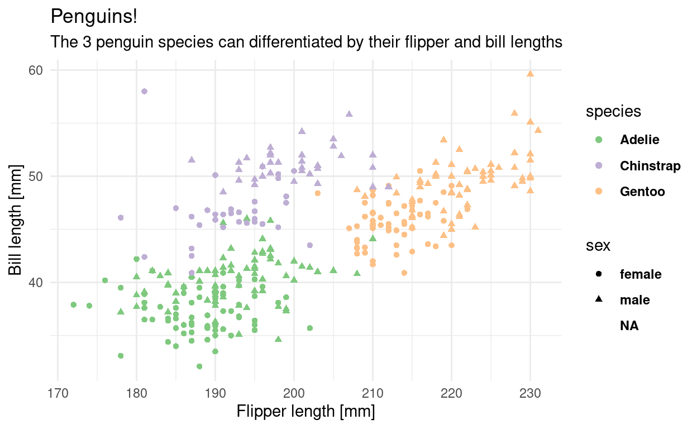

Video
Watch today’s video here:
Slides
Hover over the slides and press f for full screen mode. Press ? for a list of keyboard shortcuts. The arrow keys bring you to the next and previous slide.
Script
What You will Learn
Throughout your scientific career — and potentially outside of it — you will encounter various forms of data. Maybe you do an experiment and measured the fluorescence of a molecular probe, or you simply count the penguins at your local zoo. Everything is data in some form or another. But raw numbers without context are meaningless and tables of numbers are not only boring to look at, but often hide the actual structure in the data.
In this course you will learn to handle different kinds of data. You will learn to create pretty and insightful visualizations, compute different statistics on your data and also what these statistical concepts mean. From penguins to p-values, I got you covered.
The course will be held in English, as the concepts covered will directly transfer to the research you do, where the working language is English. That being said, feel free to ask questions in any language that I understand, so German is also fine. My Latin is a little rusty, thought.
In this course, we will be using the programming language R. R is a language particularly well suited for data analysis, because it was initially designed by statisticians and because of the interactive nature of the language, which makes it easier to get started. So don’t fret if this is your first encounter with programming, we will take one step at a time.
The datasets chosen to illustrate the various concepts and tools are not particularly centered around Biology. Rather, I chose general datasets that require less introduction and enable us to focus on learning R and statistics. This is why we will be talking about penguins, racing games or life expectancy instead of intricate molecular measurements.
First Things First: Installing R
But I was getting ahead of myself. First, we need to install R. You can download the installer for your operating system here: https://cran.r-project.org/. Feel free to post a question if you get stuck. This already gives you the ability to execute R code or use the interactive R console, but it is way more comfortable to use R inside of a so called IDE (Integrated Development Environment). IDEs give you neat things like autocompletion, a window for your plots and a help panel. The main IDE for R is called RStudio. We will be using it for this course and you can download it here: https://www.rstudio.com/products/rstudio/download/#download
Executing R Code
You can now execute commands in the R console in the bottom left. For example we can calculate a mathematical expression:
1 + 1
[1] 2Or generate the numbers from one to 10:
1:10
[1] 1 2 3 4 5 6 7 8 9 10But I rarely type directly into the console. Because we want our results to be reproducible, we write our code in a script first, so that the next person1 can see what we did and replicate our analysis. You will see that reproducibility is quite near and dear to me, so it will pop up once or twice. And as scientists, I am sure you understand the importance.
To create a new script, click the little button in the top left corner. In a script you can type regular R code, but it won’t get executed straight away. To send a line of code to the console to be executed, hit Ctrl+Enter. Go ahead, try it with:
paste("Hello", "World!")
[1] "Hello World!"The paste function combines text, just like + combines numbers. Your code can have comments to tell your future self why you wrote a piece of code the way you did. Any line starting with the number symbol # will be ignored by R.
# This line will be ignored
43 - 1 # as will be the part after this #, but not before it
[1] 42Building Blocks of R
Now it is time to introduce you to the fundamental datatypes of R. We are going to cover the so called atomic datatypes first and introduce others as they appear.
Atomic Datatypes
First we have numbers (which internally are called numeric or double)
12
12.5
Then, there are whole numbers (integer)
1L # denoted by L
as well as the rarely used complex numbers (complex)
1 + 3i # denoted by the small i for the imaginary part
Text data however will be used more often (character, string). Everything enclosed in quotation marks will be treated as text. Double or single quotation marks are both fine.
"It was night again."
'This is also text'
Logical values can only contain yes or no, or rather TRUE and FALSE in programming terms (boolean, logical).
TRUE
FALSE
There are some special types that mix with any other type. Like NULL for no value and NA for Not Assigned.
NULL
NA
NA is contagious. Any computation involving NA will return NA (because R has no way of knowing the answer):
But some functions can remove NAs before giving us an answer:
max(NA, 12, 1, na.rm = TRUE)
[1] 12You can ask for the datatype of an object with the function typeof:
typeof("hello")
[1] "character"There is also a concept called factors (factor) for categorical data, but we will talk about that later, when we get deeper into vectors.
Variables
Often, you will want to store the result of a computation for reuse, or to give it a sensible name and make your code more readable. This is what variables are for. We can assign a value to a variable using the assignment operator <- (In RStudio, there is a shortcut for it: Alt+Minus):
my_number <- 42
Executing the above code will not give you any output, but when you use the name of the variable, you can see its content.
my_number
[1] 42And you can do operations with those variables:
x <- 41
y <- 1
x + y
[1] 42NOTE Be careful about the order of execution! R enables you to work interactively and to execute the code you write in your script in any order with Ctrl+Enter, but when you execute (=“source”) the whole script, it will be executed from top to bottom.
Furthermore, code is not executed again automatically, if you change some dependency of the expression later on. So the second assignment to x doesn’t change y.
x <- 1
y <- x + 1
x <- 1000
y
[1] 2Variable names can contain letters (capitalization matters), numbers (but not as the first character) and underscores _.2
# snake_case
main_character_name <- "Kvothe"
# or camelCase
bookTitle <- "The Name of the Wind"
# you can have numbers in the name
x1 <- 12

Functions
In R, everything that exists is an object, everything that does something is a function.
Functions are the main workhorse of our data analysis. For example, there are mathematical functions, like sin, cos etc.
sin(x = 0)
[1] 0Functions take arguments (sometimes called parameters) and sometimes they also return things. The sin function takes just one argument x and returns its sine. What we do with the returned value is up to us. We can use it directly in another computation or store it in a variable. If we don’t do anything with the return value, R simply prints it to the console.
Note, that the = inside the function parenthesis gives x = 0 to the function and is separate from any x defined outside of the function. For example:
To learn more about a function in R, execute ? with the function name or press F1 with your mouse over the function. This is actually one of the most important things to learn today, because the help pages can be… well… incredibly helpful.
?sin
We can pass arguments by name or by order of appearance. The following two expressions are equivalent.
Vectors
A vector is an ordered collection of things which have the same datatype, where a datatype is something like numbers (numeric), text (character also called string) or whole numbers (integer).
The basic datatypes in R are all vectors, which means they can contain more than one entry. You can create a vector by combining things of the same data type with the function c for combine.
x <- c(1, 2, 3, 4, 5, 6)
x
[1] 1 2 3 4 5 6Any atomic datatype mentioned above can be in a vector, but atomic vectors can only store data of the same type. For example, you can have a character vector
c("This", "is", "a", "character", "vector")
[1] "This" "is" "a" "character" "vector" or a vector of logical values
c(TRUE, FALSE, TRUE, TRUE)
[1] TRUE FALSE TRUE TRUEBut not a vector with, say text and numbers. If we try to combine data of a different type, R will force all the data into the more permissive type. Because all Numbers can easily be converted into text, but not all text can be converted to numbers, this makes everything text in this example:
c("Some text", 42, 12)
[1] "Some text" "42" "12" Note the quotation marks around the numbers, marking them as text. If we were to try and use them as numbers, we would get and error message:
"12" + 1
Error in "12" + 1: non-numeric argument to binary operatorThere are other cases where we will encounter error messages. Programming languages are not unlike human languages. The computer will not always understand, what you want it to do, unless you use exactly the right grammar and vocabulary. An error messages is R’s way of telling us, that it didn’t understand, or that we asked it to do something impossible. Even experienced programmers are very fond of this advice:

Figure 1: Maybe the most important programming advice.
To solve above error message, we need to explicitly tell R to convert the text to a number:
as.numeric("12") + 1
[1] 13Subsetting
We can look at, or change, subsets of vectors using square brackets [] like so:
my_elements <- c("first", "second", "third")
my_elements[2]
[1] "second"my_elements[3] <- "new element"
my_elements
[1] "first" "second" "new element"If we assign names to the elements, we can also reference them by name.
my_elements["e3"]
e3
"new element" Pass a vector of indices (or names) to the square brackets to get (or set) multiple elements:
my_elements[c(1, 3)]
e1 e3
"first" "new element" Using a logical vector yields all elements where the vector is TRUE:
my_elements[c(TRUE, TRUE, FALSE)]
e1 e2
"first" "second" Vectorization
The basic mathematical operations in R and a lot of functions are vectorized. This means, they operate on every element of the vector. Here, every element is multiplied by 2 and the result is printed to the console.
x * 2
[1] 2 4 6 8 10 12The original vector x was not changed in doing so.
x
[1] 1 2 3 4 5 6But we could have, by assigning the result back to x, thus overwriting its previous content. The right hand side (RHS) is executed first:
x <- x * 2
Now x changed:
x
[1] 2 4 6 8 10 12A handy way of creating vectors of numbers is with the : operator to specify a range of values:
1:5
[1] 1 2 3 4 5Or using the seq function with some additional (optional) parameters:
seq(from = 1, to = 10)
[1] 1 2 3 4 5 6 7 8 9 10Now you: Look at the documentation/help page for
seqand find out how to create a vector of all even numbers from 2 to 100.
Functions and Packages – Making our lives easier
You just learned about the functions sin, seq and max. But wait, there is more! Not only in the sense that there are more functions in R (what kind of language would that be with only two verbs?!), but also in a more powerful way:
We can define our own functions!
The syntax (\(\leftarrow\) grammar for programming languages) is as follows.
name_for_the_function <- function(parameter1, parameter2, ...) { # etc.
# body of the function
# things happen
result <- parameter1 + parameter2
# Something the function should return to the caller
return(result)
}
The function ends when it reaches the return keyword. It also ends when it reaches the end of the function body and implicitly returns the last expression. So we could have written it a bit shorter and in fact you will often see people omitting the explicit return at the end:
add <- function(x, y) {
x + y
}
And we can call our freshly defined function:
add(23, 19)
[1] 42Got an error like Error in add(23, 19) : could not find function "add"? Check that you did in fact execute the code that defines the function (i.e. put your cursor on the line with the function keyword and hit Ctrl+Enter.).
Now you: Define a function that takes one argument, a vector of numbers, devides each element by the length of the vector (hint:
lengthis the function to get the length) and returns the resulting scaled vector.
You are not the only one using R. There is a welcoming and helpful community out there. Some people also write a bunch of functions and put them together in a so called package. And some people even went a step further. The tidyverse is a collection of packages that play very well together and also iron out some of the quirkier ways in which R works (Wickham et al. 2019). They provide a consistent interface to enable us to do more while having to learn less special cases. The R function install.packages("<package_name_here>") installs packages from CRAN a curated set of R packages.
The Tidyverse
Go ahead and install the tidyverse packages with
install.packages("tidyverse")
This is one exception to our effort of having everything in our script and not just in the console. We don’t want R trying to install the package every time we run the script, as this needs to happen only once. So you can either turn it into a comment, delete it from the script, or only type it in the console. You can also use RStudio’s built-in panel for package installation.
To make the functions from a package available to your R session, run the library function with the name of the package.
The convention is, to keep all library-calls at the top of your script, so that you ,and others, can see straight away, which packages are needed. Don’t worry about the messages that pop up. This is just the tidyverse telling us that two of it’s functions (lag and filter) have functions with the same names in another package (or in this case base-R) and because we loaded the tidyverse second, R will now use the tidyverse functions. This is what “masking” means.
Literate Programming: Rmarkdown

There is another package I would like you to install. It is called Rmarkdown.
install.packages("rmarkdown")
Rmarkdown enables us, to combine text with code and then produce a range of output formats like pdf, html, word documents, presentations etc. In fact, this whole website, including the slides, was created with Rmarkdown. Sounds exciting? Let’s dive into it!
Open up a new Rmarkdown document with the file extension .Rmd from the New File menu in the top left corner of RStudio: File → New File → R Markdown and choose html as the output format. I particularly like html, because you don’t have to worry about page breaks and it easily works on screens of different sizes, like your phone.
An Rmarkdown document consists of three things:
- Metadata:
Information about your document such as the author or the date in a format calledYAML. This YAML header starts and ends with three minus signs---. - Text:
Regular text is interpreted as markdown, meaning it supports things like creating headings by prefixing a line with#, or text that will be bold in the output by surrounding it with**. - Code chunks:
Starting with ```{r} and ending with ``` (backticks). They will be interpreted as R code. This is where you write the code like you did in the.Rscript file. You can insert new chunks with the button on the top right of the editor window or use the shortcut Ctrl+Alt+i.
Use these to document your thoughts alongside your code when you are doing data analysis. Future you (and reviewer number 2) will be happy! To run code inside of chunks, use,the little play button on the chunk, the tried and true Ctrl+Enter to run one line, or Ctrl+Shift+Enter to run the whole chunk. Your chunks can be as large or small as you want, but try to maintain some sensible structure.
Our First Dataset: The Palmer Penguins

So let’s explore our first dataset together in a fresh Rmarkdown document. The setup chunk is special. It gets executed automatically before any other chunk in the document is run. This makes it a good place to load packages. The dataset we are working with today actually comes in its own package, so we need to install this as well (Yes, there is a lot of installing today, but you will have to do this only once):
install.packages("palmerpenguins")
And then we populate our setup chunk with
This gives us the penguins dataset (Horst, Hill, and Gorman 2020):
penguins
| species | island | bill_length_mm | bill_depth_mm | flipper_length_mm | body_mass_g | sex | year |
|---|---|---|---|---|---|---|---|
| Adelie | Torgersen | 39.1 | 18.7 | 181 | 3750 | male | 2007 |
| Adelie | Torgersen | 39.5 | 17.4 | 186 | 3800 | female | 2007 |
| Adelie | Torgersen | 40.3 | 18.0 | 195 | 3250 | female | 2007 |
| Adelie | Torgersen | NA | NA | NA | NA | NA | 2007 |
| Adelie | Torgersen | 36.7 | 19.3 | 193 | 3450 | female | 2007 |
| Adelie | Torgersen | 39.3 | 20.6 | 190 | 3650 | male | 2007 |
Let’s talk about the shape of the penguins object. The str function reveals the structure of an object to us.
str(penguins)
tibble [344 × 8] (S3: tbl_df/tbl/data.frame)
$ species : Factor w/ 3 levels "Adelie","Chinstrap",..: 1 1 1 1 1 1 1 1 1 1 ...
$ island : Factor w/ 3 levels "Biscoe","Dream",..: 3 3 3 3 3 3 3 3 3 3 ...
$ bill_length_mm : num [1:344] 39.1 39.5 40.3 NA 36.7 39.3 38.9 39.2 34.1 42 ...
$ bill_depth_mm : num [1:344] 18.7 17.4 18 NA 19.3 20.6 17.8 19.6 18.1 20.2 ...
$ flipper_length_mm: int [1:344] 181 186 195 NA 193 190 181 195 193 190 ...
$ body_mass_g : int [1:344] 3750 3800 3250 NA 3450 3650 3625 4675 3475 4250 ...
$ sex : Factor w/ 2 levels "female","male": 2 1 1 NA 1 2 1 2 NA NA ...
$ year : int [1:344] 2007 2007 2007 2007 2007 2007 2007 2007 2007 2007 ...Lists and dataframes
Previously, we only had atomic vectors, where all elements are of the same type, like a vector of numbers, and the individual elements could not contain other things themselves (hence the name atomic): c(1, 2, 3). The next more general thing is a list, which we can create with the function list(...). Lists can contain arbitrary elements, even other lists:
[[1]]
[1] 1
[[2]]
[1] "hello"
[[3]]
[1] 1 2 3
[[4]]
[[4]][[1]]
[1] 42
[[4]][[2]]
[1] "text"The print output suggests something else: For vectors, we could subset them using [], but here we will need double square brackets [[]].
my_list[[3]]
[1] 1 2 3Using single brackets would just give us a subset of the list, not the actual element of the list (yes, this can be confusing):
my_list[3]
[[1]]
[1] 1 2 3The penguins variable contains what is called a data.frame. The reason I talked about lists just now is that dataframes are built on top of lists, where the elements are the columns. Because dataframes form this rectangular data format like a spreadsheet you know from excel, the constraint is that the elements of the list need to have the same length. We can demonstrate this by creating our own dataframe from a list.
$x
[1] 1 2 3
$y
[1] 10 42 3
$third
[1] "hello" "from" "R" Notice that I did another thing: I gave names to the elements of the list. This is nice because of two reasons. Firstly, as the print output already suggests, we can now use the dollar syntax $ to refer to the individual elements by name instead of by position and RStudio’s autocomplete helps us out.
new_list$x
[1] 1 2 3Secondly, the names will become column names when we turn it into a dataframe:
my_first_df <- as.data.frame(new_list)
my_first_df
x y third
1 1 10 hello
2 2 42 from
3 3 3 RThere is one last difference for the penguins. They are also a tibble, which is again built on top of dataframes and makes the object look nicer when we print it to the console. Compare the following when executing them in the console:
penguins
as.data.frame(penguins)
The dataset contains data for 344 penguins. of 3 different species, collected from 3 islands in the Palmer Archipelago, Antarctica3.
Translating Data into Visualizations
You probably took this course because you want to build some cool visualizations for you data. In order to do that, let us talk about how we can describe visualizations. Just like language has grammar, some smart people came up with a grammar of graphics (Wilkinson et al. 2005), which was then slightly modified and turned into an R package so that we can not only talk about but also create visualizations using this grammar (Wickham 2010).
The package is called ggplot2 and we already have it loaded because it is included in the tidyverse. Before looking at the code, we can describe what we need in order to create this graphic.
ggplot(penguins, aes(flipper_length_mm, bill_length_mm,
color = species,
shape = sex)) +
geom_point(size = 2.5) +
labs(x = "Flipper length [mm]",
y = "Bill length [mm]",
title = "Penguins!",
subtitle = "The 3 penguin species can differentiated by their flipper and bill lengths") +
theme_minimal() +
scale_color_brewer(type = "qual")
We can build this plot up step by step. The data is the foundation of our plot, but this just gives us an empty plotting canvas. I am assigning the individual steps we are going through to a variable, so that we can sequentially add elements, but you can do this in one step as shown above.
plt <- ggplot(penguins)
plt
Then, we add and aesthetic mapping to the plot. It creates a relation from the features of our dataset (like the flipper length of each penguin) to a visual property, like position of the x-axis, color or shape.
plt <- ggplot(penguins,
aes(x = flipper_length_mm,
y = bill_length_mm,
color = species,
shape = sex))
plt
Still, the plot is empty, it only has a coordinate system with a certain scale. This is because we have no geometric objects to represent our aesthetics. Elements of the plot are added using the + operator and all geometric elements that ggplot knows start with geom_. Let’s add some points:
plt <- plt +
geom_point()
plt
Look at the help page for geom_point to find out what aesthetics it understands. The exact way that features are mapped to aesthetics is regulated by scales starting with scale_ and the name of an aesthetic:
plt <- plt +
scale_color_brewer(type = "qual")
plt

We can add or change labels (like the x-axis-label) by adding the labs function.
plt <- plt +
labs(x = "Flipper length [mm]",
y = "Bill length [mm]",
title = "Penguins!",
subtitle = "The 3 penguin species can differentiated by their flipper and bill lengths")
The overall look of the plot is regulated by themes like the premade theme_ functions or more finely regulated with the theme() function, which uses element functions to create the look of individual elements. Autocomplete helps us out a lot here (Ctrl+Space).
plt <- plt +
theme_minimal() +
theme(legend.text = element_text(face = "bold"))
plt

The Community: There to catch You.
Coding can be incredibly rewarding, but also incredibly frustrating.
Luckily, the R community is with you!

In the video I give a brief overview of the resources linked below. Come back here anytime as a reference.
Exercises
This course is not graded, but I need some way of confirming that you did indeed take part in this course. In order to get the confirmation, you will send your solutions for a minimum of 5 out of the 8 exercises to me before the Friday following the lecture upload on Monday. For each week I would like you to create a fresh Rmarkdown document with your solutions as code as well as any questions that arose during the lecture. This will help me a lot in improving this course.
When you are done solving the exercises, hit the knit button (at the top of the editor panel) and send me the resulting html document via discord or email (confirm that it looks the way you expected beforehand).
Here are today’s tasks:
Write a section of text about your previous experience with data analysis and/or programming (optional, but I can use this information to customize the course).
Write the code that loads in the tidyverse and the palmer penguins data set.
Produce a scatterplot (meaning a plot with points) of the bill length vs. the bill depth, colorcoded by species.
- Imaginary bonus points if you manage to use the same colors as in the image above (hint: look at the help page for
scale_color_manual()to find out how). Even more bonus points if you also look into thetheme()function and it’s arguments, or thetheme_<...>()functions to make the plot prettier.
- Imaginary bonus points if you manage to use the same colors as in the image above (hint: look at the help page for
Create a vector of all odd numbers from 1 to 99 and store it in a variable.
Create a second variable that contains the squares of the first.
Store both variables in a named list and then turn this list into a
tibble(the enhanced version of adata.frameDiscover a shortcut for the three steps above using the function
tibble. Specifically, have a look at the third bullet point in the description of?tibble::tibble(The two colons::specify the package a function is coming from. You only needtibble(...)in the code because thetibblepackage is loaded automatically with the tidyverse. Here, I specify it directly to send you to the correct help page).Create a scatterplot of the two variables stored in the tibble using
ggplot.What
geom_function do you need to add to the plot to add a line that connects your points?
Check the metadata (YAML) of your Rmarkdown document and make sure it contains your name as the
author:.- Here are a couple more YAML options you can try if you feel adventurous.
Solutions
The Office Hour for the solutions and questions is on Friday, Nov 6, 2020 at 10:00. Find the link in the discord.
Resources
These (and more) resources can also be found on the dedicated resources page.
Tidyverse
- R for Data Science (Wickham and Grolemund 2017)
- R4DS online Community
- RStudio Cheat Sheets!
- The Modern Dive (Kim 2019)
- RStudio Education
Rmarkdown
- https://rstudio.com/wp-content/uploads/2016/03/rmarkdown-cheatsheet-2.0.pdf
- https://rstudio.com/wp-content/uploads/2015/03/rmarkdown-reference.pdf
- https://bookdown.org/yihui/rmarkdown-cookbook/
- https://bookdown.org/yihui/rmarkdown/
- https://pandoc.org/MANUAL.html#pandocs-markdown
- https://reproducible-analysis-workshop.readthedocs.io/en/latest/6.RMarkdown-knitr.html
- https://rmarkdown.rstudio.com/index.html
R in general
- Advanced R (Wickham 2019)
- Hands on Programming with R (Grolemund and Wickham 2014)
- R Packages (Wickham 2015)
- Data Visualization: A Practical Introduction (Healy 2018)
- Graph Cookbook (Chang 2013)
Statistics
Talks, Podcasts, Blogs, Videos
Misc
Made with the help of these amazing packages (plus documentation): (R Core Team 2020); (Xie 2020a); (Allaire et al. 2020); (Xie 2015); (Xie 2020b).